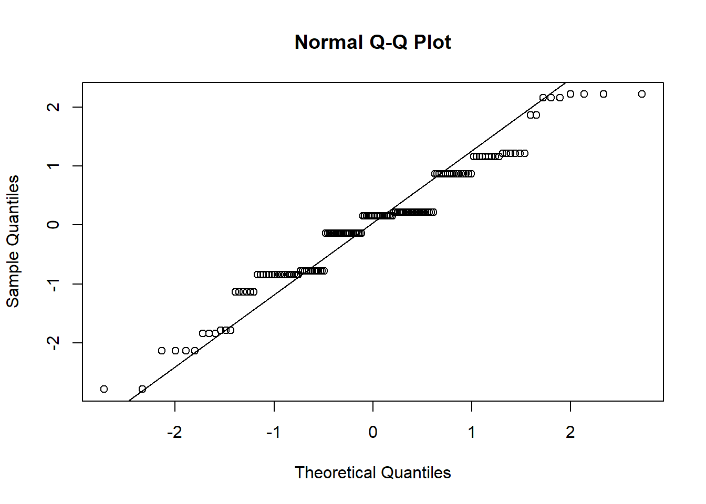

# Transforming the proficiency covariates for math, stats, and programming to be on a 1-5 scale and allow for p-values less than 1 when taking the ANOVA test and later Tukey HSD followup test.
background <- background %>%
mutate(prof_rescaled_math = (num.math.prof - 1) / (3 - 1) * (5 - 1) + 1,
prof_rescaled_stat = (num.stat.prof - 1) / (3 - 1) * (5 - 1) + 1,
prof_rescaled_prog = (num.prog.prof - 1) / (3 - 1) * (5 - 1) + 1)Table-Nine’s Analysis of the Class Survey Data
Executive Summary
The interest of this assignment was to examine the relationship between proficiency and comfort levels of PSTAT197 students in their math, statistics, and programming backgrounds. The proficiency levels and comfort levels were standardized in order to construct difference variables, where each variable was the difference between the proficiency and comfort levels for the given subject. Boxplots of the standardized proficiency vs comfort for the given subject were generated, where it was found that the median Z-scores for proficiency in statistics and programming tended to be higher than the median Z-scores for comfort in the same subjects. An ANOVA test comparing the difference variables for each subject found that there was no statistically significant difference between the differences of proficiency versus comfort for each subject.
Data Description
The data set was constructed of 51 responses from PSTAT197 students who answered a Google Form. Relevant to this report, the background.csv file consisted of responses from participants who were asked to rate their comfort level in the subjects of math, statistics, and programming from 1-3 and their proficiency level in those same subjects from 1-5. Students could input whether they were interested in working on a research project, an industry project, both types of project, or neither of the two. Additionally, the file contained a variable for how many upper division PSTAT classes a given student had taken, where the possible values were in ranges such as “0-2”, “3-5”, “6-8”, and “9+”.
Questions of Interest
The primary goal of the report was to determine whether there was a significant statistical difference between the differences of the standardized proficiency and comfort levels for the subjects of math, statistics, and programming among PSTAT197 students in this class survey. An additional objective of the report was to examine the relationship between a PSTAT197 student’s domain/background experience and their
Findings
Summarize your results. Don’t try to explain every step you took; focus instead on providing the main data analytic outputs – tables and figures – and explaining clearly what they show. Clarify any important decisions you made in obtaining them. You can display codes if you like but it is not necessary.
In order to even take the difference of the proficiency levels versus the comfort levels for each subject, the proficiency levels had to be converted from the original categorical values of “beg”, “int”, and “adv” to integer values of \(1\), \(2\), and \(3\). Before the proficiency levels could even be standardized, the levels had to be linearly transformed as their current state would constantly result in p-values of \(1\) when performing the ANOVA test later on with the difference variables.
After standardization of proficiency and comfort level covariates was complete, the difference variables were constructed.
# A second set of difference variables were created without standardization, so they could be used for the ANOVA test and not yield a p-value of 1
background <- background %>%
mutate(
diff.math = std.math.comf - std.math.prof,
diff.stat = std.stat.comf - std.stat.prof,
diff.prog = std.prog.comf - std.prog.prof,
diff.math_2 = prof_rescaled_math - math.comf,
diff.stat_2 = prof_rescaled_stat - stat.comf,
diff.prog_2 = prof_rescaled_prog - prog.comf
)After constructing the difference variables and standardizing them, a summary table and some visualizations of the difference variables for the three subjects were performed before the ANOVA test.
| Variable | N | Mean | Std. Dev. | Min | Pctl. 25 | Pctl. 75 | Max |
|---|---|---|---|---|---|---|---|
| diff.math | 51 | 0.00000000000000035 | 1.1 | -2.3 | -0.66 | 0.63 | 2.3 |
| diff.stat | 51 | 0.00000000000000047 | 0.88 | -2 | -0.73 | 0.52 | 2.2 |
| diff.prog | 51 | 0.00000000000000015 | 1.1 | -2.4 | -0.48 | 0.86 | 2.2 |
The table shows that after scaling and standardizing, the difference variables for math, statistics, and programming have relatively similar means of \(3.5 * 10^{-10}\), \(4.7 * 10^{-10}\), and \(1.5 * 10^{-10}\) respectively. The math and programming difference variables have a standard deviation of \(1.1\) while the statistics difference variable has a standard deviation of \(0.8\). The maximums of the difference variables are very close at around \(2.3\) to \(2.4\), while the minimums are a bit more spread out with \(-2.3\), \(-2\), and \(-2.4\) for math, stats, and programming. The interquartile ranges for the difference variables ranged in length from \(1.28\) for the math difference variable to \(1.34\) for the programming difference variable.
The box plots shows that mathematics and programming have a lower median Z-score for the standardized proficiency levels than the standardized comfort levels. The spread of the Z-scores for the standardized comfort levels versus the standardized proficiency levels suggests that PSTAT197 students’ evaluation of their comfort in subjects like math, statistics, and programming fluctuates more than the evaluation of their proficiencies at those subjects. This difference in the spreads of the Z-scores should be investigated further.
The dashed line means that the difference between standardized comfort and proficiency was \(0\), so any positive difference means a higher score of comfort/confidence in the given subject vs proficiency in that subject. While a negative difference indicates a higher score in proficiency vs comfort. The box plots show that the spread of Z-scores for each difference variable are fairly similar, with the exception of the statistics difference variable which has a lower median Z-score and a greater minimum Z-score.
Between the two major box plots, a question to further explore would be whether PSTAT197 students in the class are over or under confident in their background subjects, based on the reported comfort and proficiency levels for each subject.
Finally, the ANOVA test was performed to answer the primary question of the analysis.
Df Sum Sq Mean Sq F value Pr(>F)
domain 2 3.65 1.823 1.738 0.179
Residuals 150 157.41 1.049 Tukey multiple comparisons of means
95% family-wise confidence level
Fit: aov(formula = diff ~ domain, data = long_data)
$domain
diff lwr upr p adj
prog-math 0.05882353 -0.4213957 0.5390428 0.9547235
stats-math 0.35294118 -0.1272781 0.8331604 0.1938696
stats-prog 0.29411765 -0.1861016 0.7743369 0.3181869Because the p-value was \(0.179 > \alpha = 0.001\), the report fails to reject the null hypothesis that there is no statistically significant difference between the difference variables of proficiency vs comfort levels of mathematics, statistics, and programming.
The Tukey test reflects this conclusion because the adjusted p-values for the pairs of difference variables are all greater than \(\alpha=0.001\).
The confidence intervals of the averages of the difference variables were also taken.
| domain | mean_diff | sd | n | se | lower_CI | upper_CI |
|---|---|---|---|---|---|---|
| math | -0.216 | 1.119 | 51 | 0.157 | -0.530 | 0.099 |
| prog | -0.157 | 0.987 | 51 | 0.138 | -0.435 | 0.121 |
| stats | 0.137 | 0.960 | 51 | 0.134 | -0.133 | 0.407 |
Because \(0\) is included in all three of the confidence intervals, there is no significant statistical difference between the averages of the difference variables for math, stats, and programming. This lines up with the ANOVA test and the Tukey test.
To make sure the data is appropriate for the ANOVA test, the assumptions of normality, independence, and equal variances were tested.
The assumption of independence is true since the responses themselves were independent of each other. Additionally, any student’s evaluation of their proficiency and comfort levels at the given subjects is inherently independent of another student’s evaluation of those same attributes.

Shapiro-Wilk normality test
data: aov_result$residuals
W = 0.96273, p-value = 0.0003785The residuals don’t follow the qqline, so the assumption of normality is violated.
The p-value for the residuals is \(0.0003785 < \alpha = 0.001\), so the assumption of normality is again violated. However, the ANOVA test could still work as the one-way ANOVA test is robust towards violations of the normality assumption.
The vertical columns of data points represent each difference variable. They are all symmetric around \(\text{residual} = 0\) line, so the error variances are equal.
Thus, the ANOVA test was an appropriate test for the given data set.